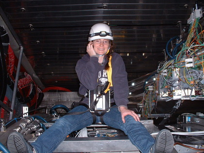

Christine Nattrass
Assistant professor in Relativistic Heavy Ion physics at the
University of Tennessee at Knoxville
christine.nattrass@utk.edu

Publications
Thesis
Talks Posters
Cirriculum
vitae
Rivet in Heavy Ion Collisions
Christine's Recipes
Resources on jet reconstruction
US LHC blog (my
contributions)
Pictures of me doing physics
2012 Southeast Conference for
Undergraduate Women in Physics
Advice and my policies on:
Letters of recommendation
Etiquette tips for emailing your professors
Teaching
Phys 137 Fall 2022
Phys 138 Spring 2022
Phys 137 Fall 2023
Phys 138 Spring 2024
Research
Please see our group
web page
About Me
I am an assistant professor at the University of Tennesee at Knoxville
working on the ALICE experiment at CERN. I am also on the PHENIX
experiment at RHIC. My current focus in ALICE is EMCal support and
work studying transverse energy in the EMCal. I have worked on testing
and commissioning front end electronics for the EMCal and have co-lead the
ALICE analysis working group on transverse energy. In PHENIX I have
helped with assembling the read out electronics for the VTX. I also
work extensively with the graduate students and organize the UT/ORNL journal
club.
I recently chaired the organizing committee for the 2012
Southeast Conference for Undergraduate Women in Physics at the
University of Tennessee at Knoxville Jan. 12-15. This conference
featured a tour of ORNL; panels on women in physics, undergraduate research,
graduate school, careers in physics, and minorities in physics; student
presentations; astronomy demonstrations; and technical talks on
physics. We had over 100 students from across the Southeast
attend. This made planning, logistics, and budgeting much more
difficult, but is a good problem to have.
Right now I'm in the initial phases of two new outreach projects. I
hope to work with an established author on a children's book on high energy
physics. I am also starting the initial phases of a project with Agnes
Mocsy from the Pratt Institute where students from the Pratt Institute would
make videos to explain relativistic heavy ion physics to the public.
I am a graduate from the relativistic heavy ion physics group at Yale
University. My thesis work was on high pT triggered
correlations. I studied collisions at both 62 GeV and 200 GeV in the
STAR detector at the Relativistic Heavy Ion Collider. I studied
correlations with identified strange particles (lambda and anti-lambda, K0s,
and xi and anti-xi) identified in the STAR TPC by the reconstruction of
their decay verticies in Cu+Cu collisions at 200 GeV. I also compared
the results for unidentified hadrons at 62 GeV and 200 GeV. I was a
teaching assistant every Spring and Fall semester in gradute school,
including physics lab for premeds, physics for non-majors, graduate math
methods, and differential equations. I was a tutor for the Colorado
State University College of Natural Sciences tutorial hall for four
years. I have attended several seminars and lectures on teaching and
tutoring and I am a certified tutor.
For more details of my research, teaching, and service work please see my
resume and my talks or email me.
In addition to being a heavy ion physicist, I am also an avid cook and I
brew my own beer, wine, and mead. I used to bike all of the time,
since I did not have a car. I have four bikes. It is impossible
to live in Knoxville without a car, so I now have a little blue Hyundai
Accent - named the Poison Dart Frog. This is a me-sized car. I
also run and weight lift. Physics has dramatically reduced the amount
of time I spend on non-science related activities, but when I get time I
still play cello, sing, and play guitar. I am a former rugby player
and archer.
Somewhat obsolete links
Research Web page (STAR only)
Information on how to get to New Haven
from various Airports